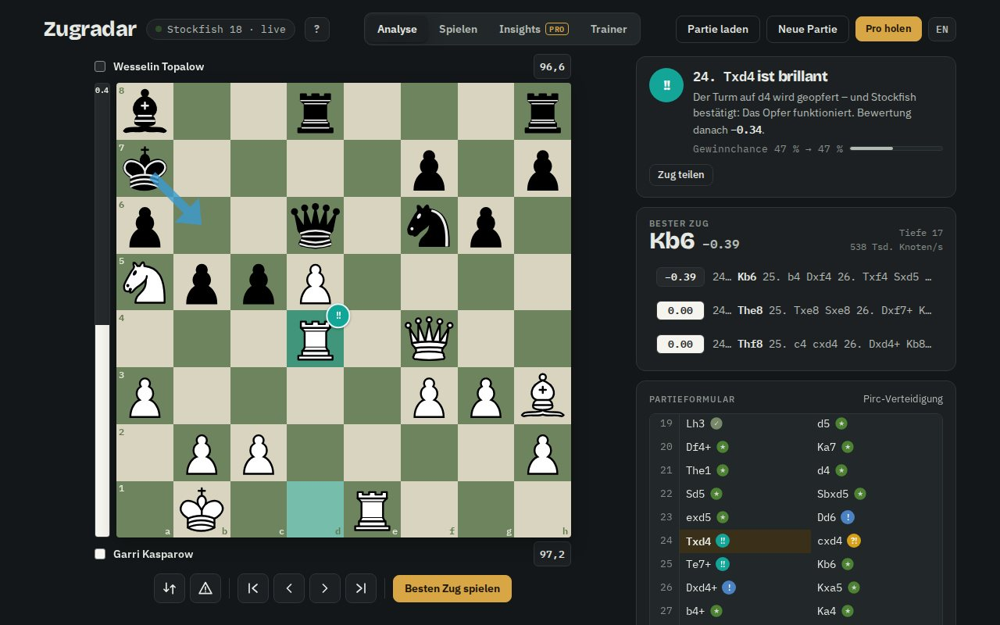
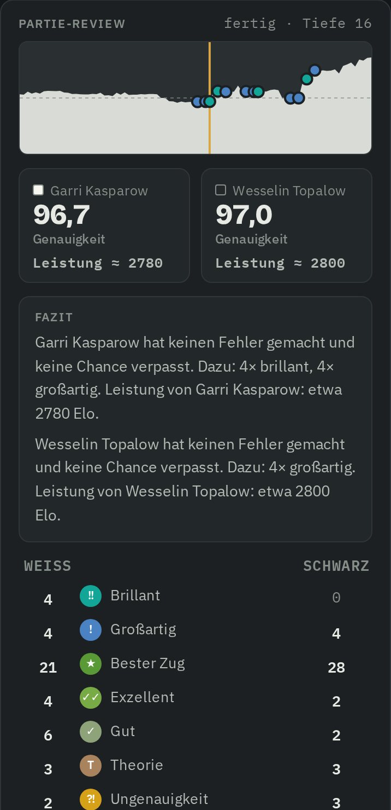
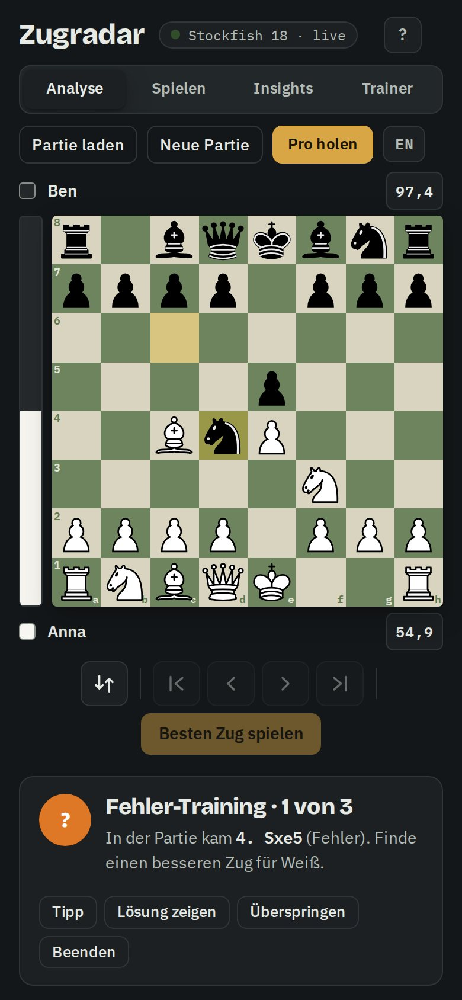

Jeder Zug.
Sofort bewertet. Brillant erkannt.
Zugradar zeigt dir in jeder Stellung den besten Zug, erkennt echte Opfer als brillant und erklärt in Klartext, warum ein Zug gut oder schlecht war. Ohne Konto und ohne Tageslimit für deine Partie-Reviews.
Läuft auf Handy, Tablet und PC. Deine Daten bleiben auf deinem Gerät.
24. Txd4 ist brillant
Der Turm auf d4 wird geopfert – Stockfish bestätigt: Das Opfer funktioniert.
Brillante Züge, nach offenen Regeln erkannt.
Ein Zug ist brillant, wenn er (fast) der beste ist und dabei echtes Material opfert, das der Gegner nehmen könnte. Stockfish muss bestätigen, dass sich das Opfer lohnt. Die berühmtesten Opfer der Schachgeschichte bestehen den Test:
5. Sxe5!!Légals Matt, 1750: Die Dame hängt, doch wer sie nimmt, wird mattgesetzt.16. Db8+!!Morphys Opernpartie, 1858: Damenopfer, danach Matt mit dem Turm.24. Txd4!!Kasparow – Topalow, 1999: der Beginn der berühmtesten Kombination der Neuzeit.Die echte App, keine Attrappe.
Oben die Analyse am PC, darunter Review und Fehler-Training am Handy. Alle Bilder stammen direkt aus Zugradar.



Alles, was ein Game Review können sollte – und mehr.
Analyse und Review einzelner Partien sind unbegrenzt kostenlos. Pro ist für die Werkzeuge über viele Partien.
Bester Zug, live
Pfeil auf dem Brett, Bewertungsbalken und bis zu fünf Engine-Linien – sofort, während du ziehst.
Brillant bis Patzer
Jeder Zug bekommt seine Einstufung: brillant, großartig, bester Zug, Theorie … bis Patzer. Mit Genauigkeit pro Spieler.
Coach erklärt warum
„Die Dame auf d5 steht ungedeckt“, „Sxe5 wäre eine Gabel gewesen“, „nach nur 1 s gespielt“ – kostenlos, ohne Abo.
Deine Partien automatischPRO
Benutzernamen von chess.com oder lichess eintragen – jede beendete Partie ist analysiert, bevor du zurück bist.
Insights und BaustellenPRO
Genauigkeit im Verlauf, Eröffnungs-Bilanz, Zeitnot-Fehler und deine drei größten Baustellen – mit konkreten Tipps.
Trainer aus eigenen FehlernPRO
Deine Patzer werden zu Aufgaben. Gelöste Stellungen kommen nach 1, 3, 7, 14 Tagen wieder, bis sie sitzen.
Leistung und Fazit
Nach jeder Partie: stärkste Phase, teuerster Zug und deine Leistung in Elo – nach einer offenen, nachvollziehbaren Formel statt einer Blackbox.
Was droht?
Ein Tipp auf das Warnsymbol (oder Taste T) zeigt, was dein Gegner als Nächstes vorhat – mit rotem Pfeil. So trainierst du den wichtigsten Blick vor jedem Zug.
Was dich anderswo ein Abo kostet.
| Zugradar | chess.com Game Review | lichess | |
|---|---|---|---|
| Partie-Reviews | unbegrenzt, kostenlos | kostenlos 1 volles Review pro Tag, mehr nur im Abo | unbegrenzt, kostenlos |
| Brillant / Großartig | ja, Regeln offengelegt | ja | nein |
| Bewertung, während du ziehst | ja, jeder Zug sofort | im Review nach der Partie | Einstufung nach der Server-Analyse |
| Erklärungen | kostenlos | Coach, voll erst mit Diamond | – |
| Zeitnot-Analyse | Fehler in Zeitnot und nach ≤ 3 s | Uhrzeiten sichtbar | Zeitdiagramm |
| Genauigkeit und Leistung | offene Formel, Leistungs-Elo pro Partie | Game Rating, Formel nicht öffentlich | Genauigkeit und ACPL, keine Elo-Schätzung |
| Konto nötig | nein | ja | für eigene Partien ja |
Stand September 2026, nach den öffentlichen Angaben der Anbieter. chess.com und lichess sind Marken ihrer Inhaber; Zugradar ist mit ihnen nicht verbunden.
Kostenlos analysieren. Mit Pro gezielt besser werden.
7 Tage Pro kostenlos testen, ohne Zahlungsdaten. Abos jederzeit kündbar.
Free
- Live-Analyse mit Stockfish 18
- Alle Zug-Bewertungen inklusive brillant
- Coach-Erklärungen und Partie-Review ohne Limit
- Spiel gegen die KI in 8 Stärken
- Partien von chess.com und lichess laden
- Insights über 5 Partien, 5 Trainer-Aufgaben am Tag
Pro
- Insights über bis zu 100 Partien
- Taktik-Trainer ohne Tageslimit
- Auto-Import jeder beendeten Partie
- Review bis Tiefe 22
- Alle Brett-Designs, Teilen ohne Wasserzeichen
Bezahlung und Rechnung über Lemon Squeezy (Lemon Squeezy LLC) als Verkäufer (Merchant of Record), inklusive Mehrwertsteuer.
Für Training gebaut, nicht zum Schummeln.
Zugradar liest laufende Online-Partien grundsätzlich nicht mit. Deine Partien kommen erst nach dem Ende ins Review. Engine-Hilfe während einer Partie gegen Menschen ist auf allen Plattformen verboten und führt zur Sperre.
Häufige Fragen
Ist Zugradar wirklich kostenlos?
Ja. Analyse, alle Zug-Bewertungen, der Coach und das Review einzelner Partien sind ohne Limit kostenlos. Pro schaltet die Werkzeuge über viele Partien frei: Insights, den unbegrenzten Trainer und den Auto-Import.
Kann ich Zugradar während einer Online-Partie nutzen?
Nein, und das ist Absicht. Laufende Partien werden nie abgefragt. Nutze Zugradar nach der Partie, zum Training oder für Partien gegen die KI.
Wo liegen meine Daten?
Nur in deinem Browser. Es gibt kein Konto und keine Tracker. Deine Partien lädt Zugradar über die öffentlichen Schnittstellen von chess.com und lichess, nur wenn du es auslöst.
Funktioniert es auf dem Handy?
Ja. Öffne die App im Browser und wähle „Zum Home-Bildschirm“. Dann startet Zugradar wie eine normale App, auch offline.
Wie stark ist die Engine?
Stockfish 18 mit neuronalem Netz (NNUE) läuft direkt auf deinem Gerät. Das ist weit stärker als jeder Großmeister.
Warum weicht meine Genauigkeit von chess.com ab?
chess.com hält seine Formel geheim. Zugradar rechnet offen: Grundlage ist die Gewinnchance vor und nach jedem Zug (wie bei lichess), die Leistungs-Elo kommt aus dem durchschnittlichen Bauernverlust. Die Zahlen sind deshalb ähnlich, aber nicht identisch – und bei uns kannst du jede nachvollziehen.
Wie kündige ich Pro?
Monats- und Jahresabos kannst du jederzeit über den Link in deiner Kauf-E-Mail kündigen. Die Einmal-Lizenz gilt dauerhaft.